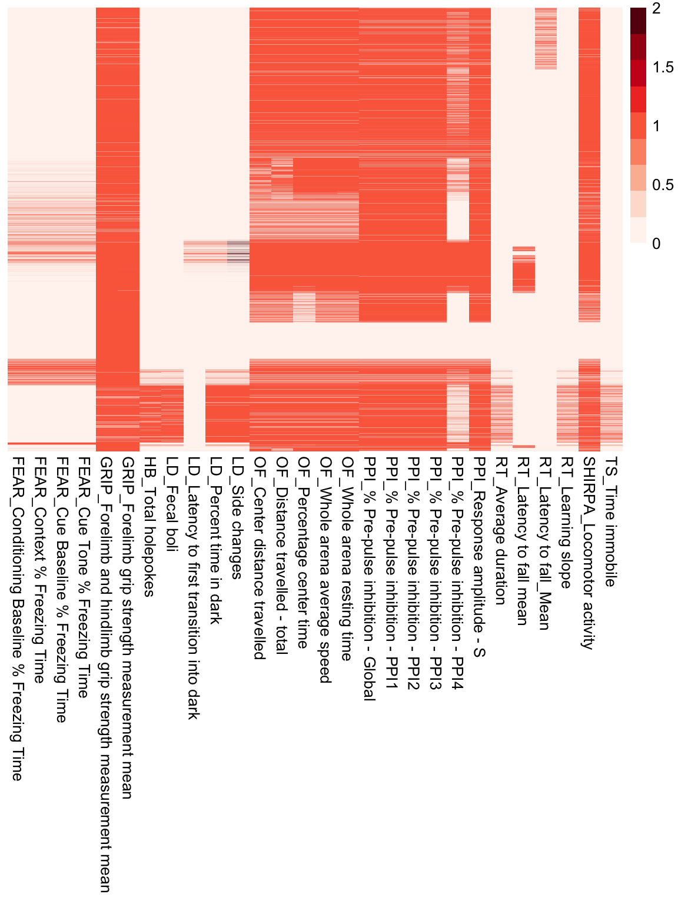

Last updated: 2020-04-03
Checks: 7 0
Knit directory: Bin_Project/
This reproducible R Markdown analysis was created with workflowr (version 1.4.0). The Checks tab describes the reproducibility checks that were applied when the results were created. The Past versions tab lists the development history.
Great! Since the R Markdown file has been committed to the Git repository, you know the exact version of the code that produced these results.
Great job! The global environment was empty. Objects defined in the global environment can affect the analysis in your R Markdown file in unknown ways. For reproduciblity it’s best to always run the code in an empty environment.
The command set.seed(20200325) was run prior to running the code in the R Markdown file. Setting a seed ensures that any results that rely on randomness, e.g. subsampling or permutations, are reproducible.
Great job! Recording the operating system, R version, and package versions is critical for reproducibility.
Nice! There were no cached chunks for this analysis, so you can be confident that you successfully produced the results during this run.
Great job! Using relative paths to the files within your workflowr project makes it easier to run your code on other machines.
Great! You are using Git for version control. Tracking code development and connecting the code version to the results is critical for reproducibility. The version displayed above was the version of the Git repository at the time these results were generated.
Note that you need to be careful to ensure that all relevant files for the analysis have been committed to Git prior to generating the results (you can use wflow_publish or wflow_git_commit). workflowr only checks the R Markdown file, but you know if there are other scripts or data files that it depends on. Below is the status of the Git repository when the results were generated:
Ignored files:
Ignored: .Rhistory
Ignored: .Rproj.user/
Note that any generated files, e.g. HTML, png, CSS, etc., are not included in this status report because it is ok for generated content to have uncommitted changes.
These are the previous versions of the R Markdown and HTML files. If you’ve configured a remote Git repository (see ?wflow_git_remote), click on the hyperlinks in the table below to view them.
| File | Version | Author | Date | Message |
|---|---|---|---|---|
| Rmd | 471da82 | BinLi8256 | 2020-04-04 | modified |
| Rmd | d5473bc | BinLi8256 | 2020-04-04 | modified |
| html | a3ef2f9 | dleelab | 2020-04-03 | added |
| Rmd | 8248e58 | dleelab | 2020-04-03 | added |
| Rmd | ed9851a | dleelab | 2020-04-03 | created |
| Rmd | 7177948 | BinLi8256 | 2020-04-03 | week0402 |
rm(list=ls())
#library(data.table)
#library(reshape2)
#library(ggplot2)
library(dplyr)
Attaching package: 'dplyr'The following objects are masked from 'package:stats':
filter, lagThe following objects are masked from 'package:base':
intersect, setdiff, setequal, unionlibrary(tidyr)
library(pheatmap)
library(RColorBrewer)pheno.file = "~/Box/Miami_IMPC/data/v10.1/AllBehaviourControls.Rdata"
load(file=pheno.file)
head(df) allele_accession_id
1 NA
2 NA
3 NA
4 NA
5 NA
6 NA
metadata
1 Location of test = Open bench,Number of animals in cage = 4,Size of squares in arena = 405.0,Experimenter ID = B7F1F
2 Location of test = Open bench,Number of animals in cage = 5,Size of squares in arena = 405.0,Experimenter ID = B7F1F
3 Location of test = Open bench,Number of animals in cage = 5,Size of squares in arena = 405.0,Experimenter ID = 5E751
4 Location of test = Open bench,Number of animals in cage = 5,Size of squares in arena = 405.0,Experimenter ID = B7F1F
5 Location of test = Open bench,Number of animals in cage = 5,Size of squares in arena = 405.0,Experimenter ID = B7F1F
6 Location of test = Open bench,Number of animals in cage = 5,Size of squares in arena = 405.0,Experimenter ID = 5E751
parameter_association_stable_id gene_accession_id sub_term_description
1 NA NA NA
2 NA NA NA
3 NA NA NA
4 NA NA NA
5 NA NA NA
6 NA NA NA
project_name genetic_background anatomy_term strain_accession_id
1 BaSH involves: C57BL/6N NA MGI:2159965
2 BaSH involves: C57BL/6N NA MGI:2159965
3 BaSH involves: C57BL/6N NA MGI:2159965
4 BaSH involves: C57BL/6N NA MGI:2159965
5 BaSH involves: C57BL/6N NA MGI:2159965
6 BaSH involves: C57BL/6N NA MGI:2159965
litter_id project_id phenotyping_center time_point file_type
1 16460 10 BCM NA
2 16462 10 BCM NA
3 16787 10 BCM NA
4 16462 10 BCM NA
5 16462 10 BCM NA
6 16787 10 BCM NA
external_sample_id intermediate_anatomy_term download_file_path
1 124045 NA NA
2 124059 NA NA
3 126185 NA NA
4 124059 NA NA
5 124059 NA NA
6 126183 NA NA
sub_term_name developmental_stage_name datasource_name
1 NA Early adult IMPC
2 NA Early adult IMPC
3 NA Early adult IMPC
4 NA Early adult IMPC
5 NA Early adult IMPC
6 NA Early adult IMPC
parameter_association_sequence_id id procedure_group
1 NA 14447436 IMPC_CSD
2 NA 14447479 IMPC_CSD
3 NA 14447606 IMPC_CSD
4 NA 14447657 IMPC_CSD
5 NA 14447705 IMPC_CSD
6 NA 14447719 IMPC_CSD
anatomy_term_synonym pipeline_stable_id parameter_stable_id anatomy_id
1 NA BCM_001 IMPC_CSD_026_001 NA
2 NA BCM_001 IMPC_CSD_026_001 NA
3 NA BCM_001 IMPC_CSD_026_001 NA
4 NA BCM_001 IMPC_CSD_029_001 NA
5 NA BCM_001 IMPC_CSD_030_001 NA
6 NA BCM_001 IMPC_CSD_026_001 NA
parameter_id age_in_days date_of_experiment
1 47879 65 2014-11-04T00:00:00Z
2 47879 65 2014-11-04T00:00:00Z
3 47879 63 2014-11-11T00:00:00Z
4 47887 65 2014-11-04T00:00:00Z
5 47883 65 2014-11-04T00:00:00Z
6 47879 63 2014-11-11T00:00:00Z
selected_top_level_anatomy_id weight pipeline_name procedure_stable_id
1 NA 26.1 BCM Pipeline IMPC_CSD_003
2 NA 21.0 BCM Pipeline IMPC_CSD_003
3 NA 19.6 BCM Pipeline IMPC_CSD_003
4 NA 21.0 BCM Pipeline IMPC_CSD_003
5 NA 21.0 BCM Pipeline IMPC_CSD_003
6 NA 18.9 BCM Pipeline IMPC_CSD_003
observation_type weight_parameter_stable_id text_value
1 categorical IMPC_BWT_001_001 NA
2 categorical IMPC_BWT_001_001 NA
3 categorical IMPC_BWT_001_001 NA
4 categorical IMPC_BWT_001_001 NA
5 categorical IMPC_BWT_001_001 NA
6 categorical IMPC_BWT_001_001 NA
developmental_stage_acc procedure_name
1 IMPCLS:0005 Combined SHIRPA and Dysmorphology
2 IMPCLS:0005 Combined SHIRPA and Dysmorphology
3 IMPCLS:0005 Combined SHIRPA and Dysmorphology
4 IMPCLS:0005 Combined SHIRPA and Dysmorphology
5 IMPCLS:0005 Combined SHIRPA and Dysmorphology
6 IMPCLS:0005 Combined SHIRPA and Dysmorphology
phenotyping_center_id production_center_id weight_date
1 25 25 2014-11-06T00:00:00Z
2 25 25 2014-11-06T00:00:00Z
3 25 25 2014-11-12T00:00:00Z
4 25 25 2014-11-06T00:00:00Z
5 25 25 2014-11-06T00:00:00Z
6 25 25 2014-11-12T00:00:00Z
date_of_birth procedure_id gene_symbol
1 2014-08-31T00:00:00Z 913 NA
2 2014-08-31T00:00:00Z 913 NA
3 2014-09-09T00:00:00Z 913 NA
4 2014-08-31T00:00:00Z 913 NA
5 2014-08-31T00:00:00Z 913 NA
6 2014-09-09T00:00:00Z 913 NA
metadata_group biological_sample_group pipeline_id
1 90a6d0764193bc4243363bcdcc04be6e control 16
2 90a6d0764193bc4243363bcdcc04be6e control 16
3 90a6d0764193bc4243363bcdcc04be6e control 16
4 90a6d0764193bc4243363bcdcc04be6e control 16
5 90a6d0764193bc4243363bcdcc04be6e control 16
6 90a6d0764193bc4243363bcdcc04be6e control 16
sequence_id selected_top_level_anatomy_term biological_sample_id
1 NA NA 160091
2 NA NA 166396
3 NA NA 176052
4 NA NA 166396
5 NA NA 166396
6 NA NA 178627
biological_model_id weight_days_old discrete_point datasource_id
1 41959 67 NA 22
2 41959 67 NA 22
3 41959 64 NA 22
4 41959 67 NA 22
5 41959 67 NA 22
6 41959 64 NA 22
experiment_source_id experiment_id data_point sex production_center
1 24520 644899 NA male BCM
2 24529 644898 NA female BCM
3 24879 644904 NA female BCM
4 24529 644898 NA female BCM
5 24529 644898 NA female BCM
6 24877 644903 NA female BCM
colony_id parameter_name parameter_association_value
1 SMDBB Head morphology NA
2 SMDBB Head morphology NA
3 CCDDB Head morphology NA
4 SMDBB Activity (body position) NA
5 SMDBB Tremor NA
6 CCDDB Head morphology NA
allele_symbol age_in_weeks zygosity intermediate_anatomy_id
1 NA 9 homozygote NA
2 NA 9 homozygote NA
3 NA 9 homozygote NA
4 NA 9 homozygote NA
5 NA 9 homozygote NA
6 NA 9 homozygote NA
strain_name _version_ data_type parameter_association_name
1 C57BL/6N 1.660207e+18 TEXT NA
2 C57BL/6N 1.660207e+18 TEXT NA
3 C57BL/6N 1.660207e+18 TEXT NA
4 C57BL/6N 1.660207e+18 TEXT NA
5 C57BL/6N 1.660207e+18 TEXT NA
6 C57BL/6N 1.660207e+18 TEXT NA
sub_term_id category allelic_composition
1 NA As expected NA
2 NA As expected NA
3 NA As expected NA
4 NA As expected NA
5 NA Absent NA
6 NA As expected NApheno = df %>% filter(data_type!="TEXT") %>%
mutate(proc_short_name=recode(procedure_name, "Acoustic Startle and Pre-pulse Inhibition (PPI)"="PPI",
"Combined SHIRPA and Dysmorphology"="SHIRPA",
"Fear Conditioning"="FEAR",
"Grip Strength"="GRIP",
"Hole-board Exploration"="HB",
"Light-Dark Test"="LD",
"Open Field"="OF",
"Rotarod"="RT",
"Tail Suspension"="TS")) %>%
mutate(proc_param_name=paste0(proc_short_name,"_",parameter_name))
head(pheno) allele_accession_id
1 NA
2 NA
3 NA
4 NA
5 NA
6 NA
metadata
1 Startle stimulus = 120,Inter PP-S stimulus interval = 50,Pre-pulse stimulus 1 = 74,Number of trials = 60,In-chamber adapt time = 300,Stimulus order = Random,Mouse chamber ID = 3,Equipment manufacturer = San Diego Instruments,Equipment model = SR-LAB Startle Response System,Software version = SR LAB software,Background noise = 70,Inter-trial interval = random 10-20,Light level in chamber = 0,Mouse chamber dimension = 12 x 3.8,Sound generator manufacturer = San Diego Instruments,Sound generator model = SR-LAB Startle Response System,Sound-proof box dimension = 38.1 x 35.6 x 45.7,Date equipment last calibrated = 2014-08-18,Pre-pulse stimulus 2 = 78,Pre-pulse stimulus 3 = 82,Pre-pulse stimulus 4 = 90,Equipment ID = 1 =2918\\, 2 =2919\\, 3 =2739\\, 4 = 2737\\, 5 = 2920\\, 6 = 2921\\, 7 = 2738\\, 8 = 2736,Acoustic startle response measure = Max peak
2 Equipment ID = 1,Equipment manufacturer = Chatillon,Grid model = Not HMGU plate,Equipment model = Ametek,Date equipment last calibrated = 2015-03-10
3 Equipment ID = D,Equipment manufacturer = O'hara CO Ltd.,Equipment model = TijmeOF9,Central zone surface area = 40,Light intensity in the centre of the arena = 90,Number of animals per cage = 1,Color of arena = White,Height of the wall = 32,Distance from light source: if direct illumination = 49,Periphery zone = 7.35,Type of analysis = Video tracking,Arena Size = 40x40,Disinfectant = 50% alcohol,Arena ID = 30,Software Version = Image OF,Arena Material = vinyl chloride
4 Equipment ID = GRIPTEST V3.11,Equipment manufacturer = Bioseb,Grid model = HMGU plate,Equipment model = Bio-GT3+MR
5 Equipment model = TijmeOF9,Start Time = 2018-01-30T10:30:00+09:00,Arena Size = 50x50,Software Version = TimeOFCR4,Height of the wall = 29,Equipment manufacturer = O'hara CO Ltd.,Periphery zone = 9.39,Central zone surface area = 39,Color of arena = Grey,Equipment ID = OFD1,Date equipment last calibrated = 2018-01-30,Light intensity in the centre of the arena = 90,Arena ID = 103,Disinfectant = 70% ethanol,Type of analysis = Video tracking,Number of animals per cage = 1,Arena Material = PVC,Experimenter ID = BAEC3
6 Startle stimulus = 120,Inter PP-S stimulus interval = 50,Pre-pulse stimulus 1 = 74,Number of trials = 60,In-chamber adapt time = 300,Stimulus order = Random,Mouse chamber ID = 7,Equipment manufacturer = San Diego Instruments,Equipment model = SR-LAB Startle Response System,Software version = SR LAB software,Background noise = 70,Inter-trial interval = random 10-20,Light level in chamber = 0,Mouse chamber dimension = 12 x 3.8,Sound generator manufacturer = San Diego Instruments,Sound generator model = SR-LAB Startle Response System,Sound-proof box dimension = 38.1 x 35.6 x 45.7,Date equipment last calibrated = 2015-12-16,Pre-pulse stimulus 2 = 78,Pre-pulse stimulus 3 = 82,Equipment ID = 1 =2918\\, 2 =2919\\, 3 =2739\\, 4 = 2737\\, 5 = 2920\\, 6 = 2921\\, 7 = 2738\\, 8 = 2736,Acoustic startle response measure = Max peak
parameter_association_stable_id gene_accession_id sub_term_description
1 NA NA NA
2 NA NA NA
3 NA NA NA
4 NA NA NA
5 NA NA NA
6 NA NA NA
project_name genetic_background anatomy_term strain_accession_id
1 JAX involves: C57BL/6NJ NA MGI:3056279
2 BaSH involves: C57BL/6N NA MGI:2159965
3 RBRC involves: C57BL/6NTac NA MGI:2164831
4 MGP involves: C57BL/6N NA MGI:2159965
5 KMPC involves: C57BL/6NTac NA MGI:2164831
6 JAX involves: C57BL/6NJ NA MGI:3056279
litter_id project_id phenotyping_center time_point file_type
1 20140611 13 JAX NA
2 52944 10 BCM NA
3 IM0035_39.1 18 RBRC NA
4 353577 8 WTSI NA
5 Lingo2-lit1-1-F9-1-3 22 KMPC NA
6 20151006 13 JAX NA
external_sample_id intermediate_anatomy_term download_file_path
1 K23154 NA NA
2 380967 NA NA
3 IM0035_c0022F NA NA
4 2023208 NA NA
5 1711-0057F0067 NA NA
6 J12297 NA NA
sub_term_name developmental_stage_name datasource_name
1 NA Early adult IMPC
2 NA Early adult IMPC
3 NA Early adult IMPC
4 NA Early adult IMPC
5 NA Early adult IMPC
6 NA Early adult IMPC
parameter_association_sequence_id id procedure_group
1 NA 62567652 IMPC_ACS
2 NA 61671736 IMPC_GRS
3 NA 62250522 IMPC_OFD
4 NA 61688998 IMPC_GRS
5 NA 39598328 IMPC_OFD
6 NA 62567634 IMPC_ACS
anatomy_term_synonym pipeline_stable_id parameter_stable_id anatomy_id
1 NA JAX_001 IMPC_ACS_036_001 NA
2 NA BCM_001 IMPC_GRS_008_001 NA
3 NA IMPC_001 IMPC_OFD_020_001 NA
4 NA MGP_001 IMPC_GRS_009_001 NA
5 NA IMPC_001 IMPC_OFD_007_001 NA
6 NA JAX_001 IMPC_ACS_034_001 NA
parameter_id age_in_days date_of_experiment
1 21708 69 2014-08-18T00:00:00Z
2 36199 65 2018-02-20T00:00:00Z
3 2150 69 2015-08-03T00:00:00Z
4 33185 64 2015-03-02T00:00:00Z
5 47986 64 2018-01-30T00:00:00Z
6 21706 72 2015-12-16T00:00:00Z
selected_top_level_anatomy_id weight pipeline_name
1 NA 18.15 JAX Pipeline
2 NA 20.00 BCM Pipeline
3 NA 21.20 IMPC Pipeline
4 NA 28.40 MGP Select Pipeline
5 NA 22.62 IMPC Pipeline
6 NA 18.54 JAX Pipeline
procedure_stable_id observation_type weight_parameter_stable_id
1 IMPC_ACS_003 unidimensional IMPC_BWT_001_001
2 IMPC_GRS_001 unidimensional IMPC_BWT_001_001
3 IMPC_OFD_001 unidimensional IMPC_GRS_003_001
4 IMPC_GRS_001 unidimensional IMPC_GRS_003_001
5 IMPC_OFD_001 unidimensional IMPC_BWT_001_001
6 IMPC_ACS_003 unidimensional IMPC_BWT_001_001
text_value developmental_stage_acc
1 NA IMPCLS:0005
2 NA IMPCLS:0005
3 NA IMPCLS:0005
4 NA IMPCLS:0005
5 NA IMPCLS:0005
6 NA IMPCLS:0005
procedure_name phenotyping_center_id
1 Acoustic Startle and Pre-pulse Inhibition (PPI) 6
2 Grip Strength 25
3 Open Field 26
4 Grip Strength 3
5 Open Field 34
6 Acoustic Startle and Pre-pulse Inhibition (PPI) 6
production_center_id weight_date date_of_birth
1 6 2014-08-15T00:00:00Z 2014-06-10T00:00:00Z
2 25 2018-02-20T00:00:00Z 2017-12-17T00:00:00Z
3 26 2015-08-05T00:00:00Z 2015-05-26T00:00:00Z
4 3 2015-03-02T00:00:00Z 2014-12-28T00:00:00Z
5 34 2018-01-29T00:00:00Z 2017-11-27T00:00:00Z
6 6 2015-12-18T00:00:00Z 2015-10-05T00:00:00Z
procedure_id gene_symbol metadata_group
1 439 NA 3e0378611decd920a1dd0f03bb65ae99
2 683 NA 2fc8a58057705e2aceb33a440fe5839d
3 89 NA f5812b5b9ebb0697ebe4a69b0fa78590
4 624 NA 216fb750fec90b455e2384c60ebb76c6
5 914 NA f5812b5b9ebb0697ebe4a69b0fa78590
6 439 NA 4d19fef71157d78c8882581b89b06ad6
biological_sample_group pipeline_id sequence_id
1 control 12 NA
2 control 16 NA
3 control 7 NA
4 control 15 NA
5 control 7 NA
6 control 12 NA
selected_top_level_anatomy_term biological_sample_id biological_model_id
1 NA 242736 47815
2 NA 155527 41959
3 NA 72957 40139
4 NA 183476 41959
5 NA 81327 40139
6 NA 226658 47815
weight_days_old discrete_point datasource_id
1 66 NA 22
2 65 NA 22
3 71 NA 22
4 64 NA 22
5 63 NA 22
6 74 NA 22
experiment_source_id experiment_id data_point sex
1 derived_IMPC_ACS_036_001_15368 4791376 88.0373 female
2 derived_IMPC_GRS_008_001_25917 3895461 75.3333 female
3 derived_IMPC_OFD_020_001_61881 4474246 6130.3000 female
4 derived_IMPC_GRS_009_001_27124 3912722 120.3970 male
5 Lingo2-OFD-20180130-1711-0057F0067 2144893 607.0000 female
6 derived_IMPC_ACS_034_001_80176 4791359 68.0742 female
production_center colony_id
1 JAX unknown
2 BCM NJAXB
3 RBRC RIKEN-Psmf1-E09_
4 WTSI MFAB
5 KMPC M0057-Lingo2
6 JAX unknown
parameter_name
1 % Pre-pulse inhibition - PPI4
2 Forelimb grip strength measurement mean
3 Distance travelled - total
4 Forelimb and hindlimb grip strength measurement mean
5 Whole arena resting time
6 % Pre-pulse inhibition - PPI2
parameter_association_value allele_symbol age_in_weeks zygosity
1 NA NA 9 homozygote
2 NA NA 9 homozygote
3 NA NA 9 homozygote
4 NA NA 9 homozygote
5 NA NA 9 homozygote
6 NA NA 10 homozygote
intermediate_anatomy_id strain_name _version_ data_type
1 NA C57BL/6NJ 1.66021e+18 FLOAT
2 NA C57BL/6N 1.66021e+18 FLOAT
3 NA C57BL/6NTac 1.66021e+18 FLOAT
4 NA C57BL/6N 1.66021e+18 FLOAT
5 NA C57BL/6NTac 1.66021e+18 FLOAT
6 NA C57BL/6NJ 1.66021e+18 FLOAT
parameter_association_name sub_term_id category allelic_composition
1 NA NA NA
2 NA NA NA
3 NA NA NA
4 NA NA NA
5 NA NA NA
6 NA NA NA
proc_short_name
1 PPI
2 GRIP
3 OF
4 GRIP
5 OF
6 PPI
proc_param_name
1 PPI_% Pre-pulse inhibition - PPI4
2 GRIP_Forelimb grip strength measurement mean
3 OF_Distance travelled - total
4 GRIP_Forelimb and hindlimb grip strength measurement mean
5 OF_Whole arena resting time
6 PPI_% Pre-pulse inhibition - PPI2dim(pheno)[1] 357765 76mtest = table(pheno$biological_sample_id, pheno$proc_param_name)
mtest = as.data.frame.matrix(mtest)
pheatmap(mtest, cluster_row = F, cluster_cols = F, show_rownames = F, color = brewer.pal(n = 9, name = "Reds"))
| Version | Author | Date |
|---|---|---|
| a3ef2f9 | dleelab | 2020-04-03 |
sessionInfo()R version 3.6.3 (2020-02-29)
Platform: x86_64-apple-darwin15.6.0 (64-bit)
Running under: macOS Catalina 10.15.3
Matrix products: default
BLAS: /Library/Frameworks/R.framework/Versions/3.6/Resources/lib/libRblas.0.dylib
LAPACK: /Library/Frameworks/R.framework/Versions/3.6/Resources/lib/libRlapack.dylib
locale:
[1] en_US.UTF-8/en_US.UTF-8/en_US.UTF-8/C/en_US.UTF-8/en_US.UTF-8
attached base packages:
[1] stats graphics grDevices utils datasets methods base
other attached packages:
[1] RColorBrewer_1.1-2 pheatmap_1.0.12 tidyr_0.8.3
[4] dplyr_0.8.3
loaded via a namespace (and not attached):
[1] Rcpp_1.0.2 knitr_1.24 whisker_0.4 magrittr_1.5
[5] workflowr_1.4.0 munsell_0.5.0 tidyselect_0.2.5 colorspace_1.4-1
[9] R6_2.4.0 rlang_0.4.0 stringr_1.4.0 tools_3.6.3
[13] grid_3.6.3 gtable_0.3.0 xfun_0.9 git2r_0.26.1
[17] htmltools_0.4.0 yaml_2.2.0 rprojroot_1.3-2 digest_0.6.20
[21] assertthat_0.2.1 lifecycle_0.1.0 tibble_2.1.3 crayon_1.3.4
[25] purrr_0.3.2 fs_1.3.1 glue_1.3.1 evaluate_0.14
[29] rmarkdown_2.1 stringi_1.4.3 compiler_3.6.3 pillar_1.4.2
[33] scales_1.1.0 backports_1.1.4 pkgconfig_2.0.2